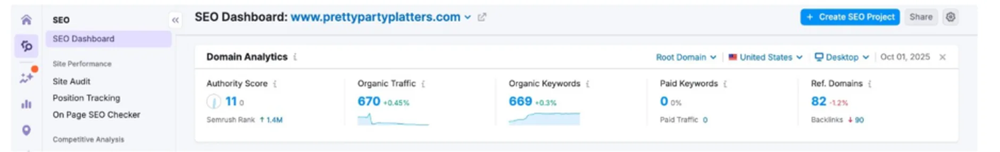
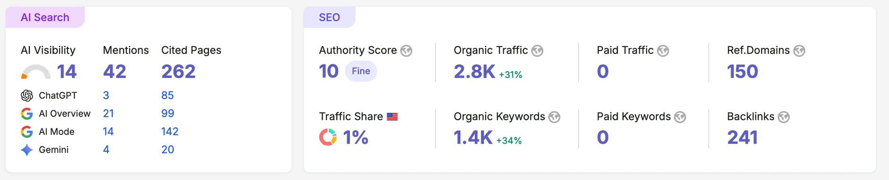

670 to 2,800 organic visits a month
Ten months of SEO for a US catering business: organic traffic from 670 to 2,800 a month, keywords from 669 to 1,400, and 262 pages now cited across ChatGPT, AI Overviews, AI Mode and Gemini.
Headline results
The problem
This was the harder starting point: not a dead site, but a working one. 669 keywords were already ranking and bringing roughly 670 visits a month, and almost none of those keywords attached to anything a customer would actually buy. Of 45 pages crawled, 2 were healthy and 41 had issues.
What we did
- Clear the technical debt first: 4 errors, 402 warnings and 66 notices, plus robots.txt, redirects and crawl depth
- Keyword research aimed at buying intent rather than volume, since existing rankings already proved traffic without intent goes nowhere
- Rebuild pages around what a customer is trying to order, not what ranks easily
- Structure content so passages can be quoted directly by AI assistants
How it ran
The October 2025 audit found the problem was quality, not visibility. Traffic existed; it simply did not convert because the keywords behind it had no purchase intent.
Ten months later traffic was up more than fourfold, and 262 pages were being cited across ChatGPT, AI Overviews, AI Mode and Gemini.


What the numbers actually show
Ranking for more things is not the goal. This account was already ranking for 669 keywords and going nowhere. Intent is the variable that matters, and AI citation follows the same rule: assistants quote pages that answer a question cleanly.
Full reporting for this campaign, including the raw dashboards, is published on Arshad Hossain’s portfolio.
Questions about this project
Monthly organic visits, from 670: 2.8K. Keywords ranking, from 669: 1.4K. Pages cited by AI assistants: 262.
Clear the technical debt first: 4 errors, 402 warnings and 66 notices, plus robots.txt, redirects and crawl depth. Keyword research aimed at buying intent rather than volume, since existing rankings already proved traffic without intent goes nowhere.
Want results like this?
Tell us what you are trying to grow and we will tell you what we would change first. No cost, no pitch.
Request a Free Discovery Call →